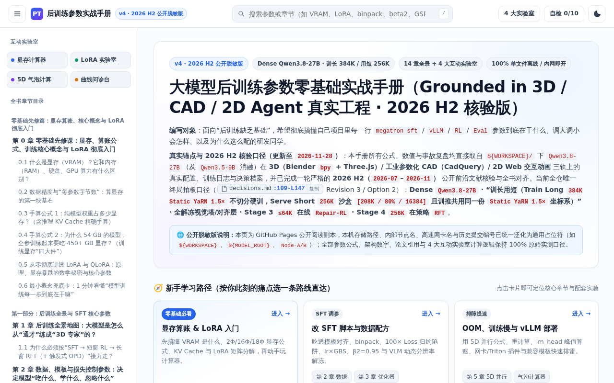
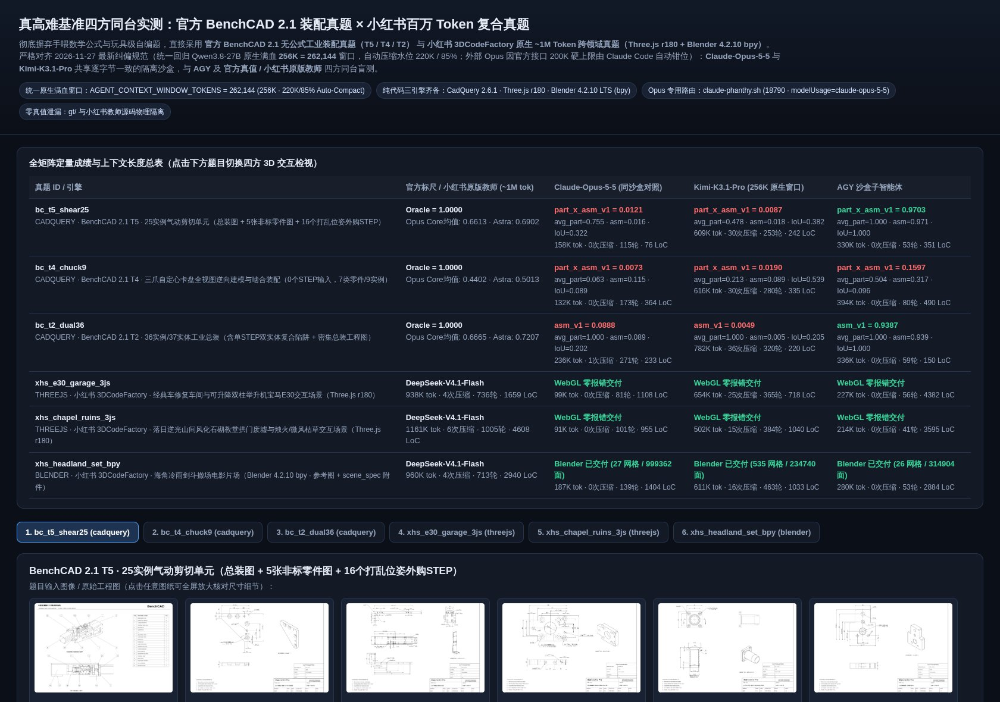
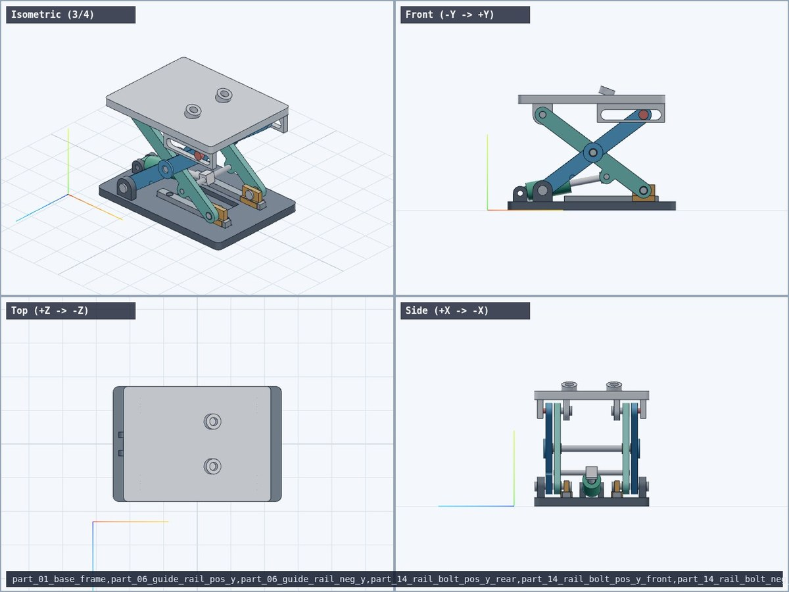
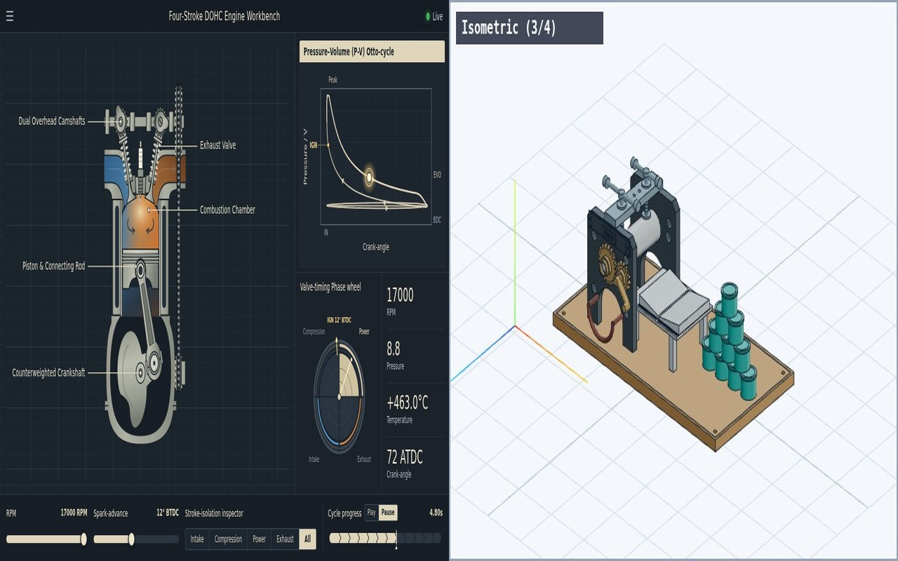

大模型后训练参数零基础实战手册（2026 H2 核验版）
面向零基础研发的后训练交互式手册（v4 · 2026 H2 核验拓展版）：涵盖显存手算与 LoRA/QLoRA 原理、SFT/5D 并行/RL 参数精解与 2026 下半年最新前沿综述，内置显存计算器、LoRA 矩阵实验室、5D 并行气泡计算器与训练曲线问诊台。
说明：公开脱敏版：本机路径、内网地址、集群节点名与内部提交编号已替换为通用占位符；显存与气泡计算器为教学估算值。
打开交互展示 ↗通过自有 GitHub Pages (gh-pages) 持久托管 · 全部作品经过静态白名单与零敏感路径脱敏校验

面向零基础研发的后训练交互式手册（v4 · 2026 H2 核验拓展版）：涵盖显存手算与 LoRA/QLoRA 原理、SFT/5D 并行/RL 参数精解与 2026 下半年最新前沿综述，内置显存计算器、LoRA 矩阵实验室、5D 并行气泡计算器与训练曲线问诊台。
说明：公开脱敏版：本机路径、内网地址、集群节点名与内部提交编号已替换为通用占位符；显存与气泡计算器为教学估算值。
打开交互展示 ↗
3道官方BenchCAD 2.1无公式工业总装真题（T5/T4/T2）+ 3道小红书3DCodeFactory百万Token真题（Three.js r180 + Blender 4.2.10 bpy），Opus-5.5 vs Kimi-K3.1-Pro vs AGY vs 官方真值/小红书原版教师四方同台盲测与交互检视
说明：小红书教堂废墟原版教师从分片压缩历史重建的代码含1处纹理wrapS小瑕疵（已附原轨迹最终渲染图）；Opus海角片场99.9万面Blender场景的网页预览GLB已做适度流式减面以适配浏览器流畅加载。
打开交互展示 ↗
含 DIN 2095 变螺距磨平弹簧、精确渐开线螺旋锥齿轮副、微扰四视角变厚诱导轮、非正交三法兰离心泵蜗壳、32 零件混合图件剪叉升降台及 BT40→BT50 动平衡内冷刀柄的交互 3D GLB、剖面、特写与确定性几何验收对比。
打开交互展示 ↗
已剔除跨江四线轨道交通等 4 道扁平节点拓扑/仪表盘低难度题；保留高难光学/机械/运动学 2D 与多零件 CAD 交互对比。
打开交互展示 ↗